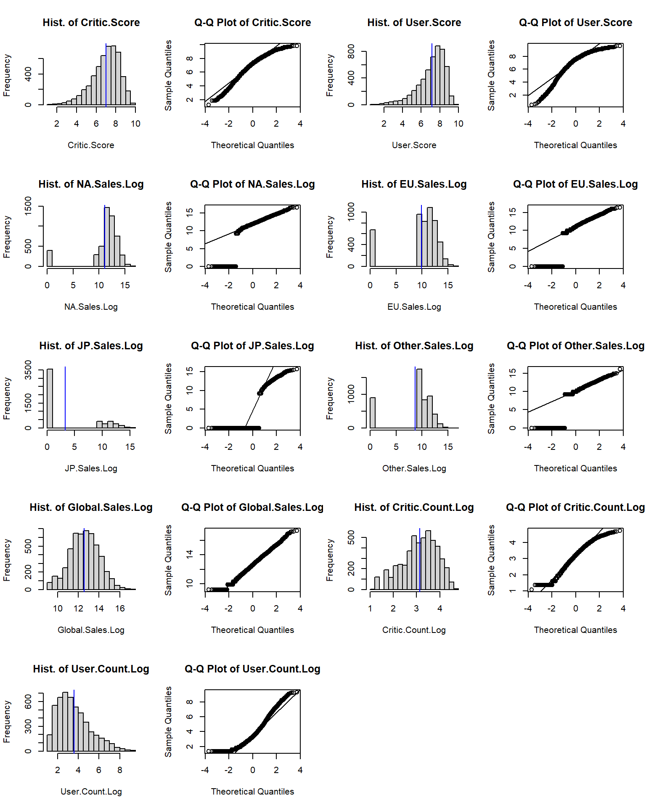
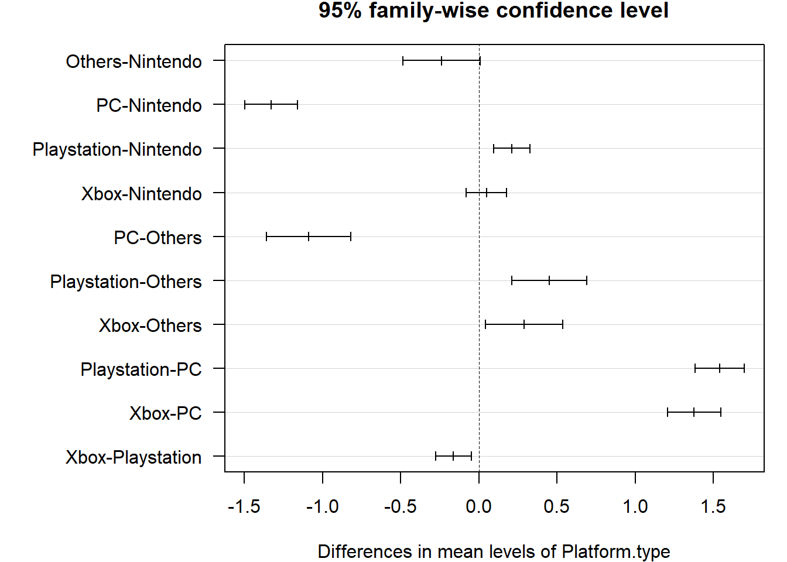

Chapter 2 Visualizing the iris flower data set
Learning objectives:
- Install and load R packages (ggplot2 and pheatmap)
- Basic concepts of R graphics
- Ploting with ggplot2
- Different ways to visualize the iris flower dataset
2.1 Basic concepts of R graphics
In addition to the graphics functions in base R, there are many other packages we can use to create graphics. The most widely used are lattice and ggplot2, both implemented in additional packages. Together with base R graphics, sometimes these are referred to as the three independent paradigms of R graphics. The lattice package extends base R graphics and enables the creating of graphs in multiple facets. The ggplot2 is developed based on a Grammar of Graphics (hence the “gg”), a modular approach that builds complex graphics by adding layers. Intuitive yet powerful, ggplot2 is becoming increasingly popular.
We start with base R graphics. The first import distinction should be made about high- and low-level graphics functions in base R. See this table below. High-level graphics functions initiates new plots, to which new elements could be added using the low level functions.
| Function | Memo |
|---|---|
| plot | Generic plotting function |
| boxplot | boxplot. Can be applied to multiple columns of a matrix, or use equations boxplot( y ~ x) |
| hist | histogram |
| qqnorm | Quantile-quantile (Q-Q) plot to check for normality |
| curve | Graph an arithmetic function |
| barplot | Barplot |
| mosaicplot | Using mosaics to represent the frequencies of tabulated counts. |
| heatmap | Using colors to visualize a matrix of numeric values. |
In contrast, low-level graphics functions does not wipe out the existing plot, they adds elements to it.
| Function | Memo |
|---|---|
| points | Add points to a plot |
| lines | Add lines to a plot |
| abline | Add a straight line |
| segments | Add line segments |
| text | Add text to a plot |
| legend | Add a legend to a plot |
| arrows | Add arrows to a plot |
Sometimes we generate many graphics quickly for exploratory data analysis (EDA) to get some sense of how the data looks like. We can achieve this by using plotting functions with default settings to quickly generate a lot of “plain” plots. R is a very powerful EDA tool. However, you have to know what types of graphs are suitable for the data.
Sometimes we want to generate really “cool”-looking graphics for papers, presentations. Making such plots typically requires a bit more coding, as you have to add different parameters easily understood. For me, it usually involves some Google searches of example codes, and then I revise it via trial-and-error. If I cannot make it work, I read the help document.
One of the open secret of R programming is that you can start from a plain figure and keep trying to refine it step by step while googling. Let’s take a example using the base R graphics.
This produces a basic scatter plot with the petal length on the x-axis and petal width on the y-axis. Since iris is a data frame, we will use the iris$Petal.Length to refer to the Petal.Length column. This avoids using the attach function.
plot(iris$Petal.Length, iris$Petal.Width)
Let’s change the marker type.
plot(iris$Petal.Length, iris$Petal.Width,
pch = 2) # change to triangel Note that this command spans two lines. Very long code in the same line makes it hard to read. When you are typing in the Console window, R knows that you are not done and will be waiting for second parenthesis.
Note that this command spans two lines. Very long code in the same line makes it hard to read. When you are typing in the Console window, R knows that you are not done and will be waiting for second parenthesis.
The pch parameter can take values from 0 to 25, each corresponding to different types of marker. See a list here.
We can also change the color of the data points easily with the col parameter.
plot(iris$Petal.Length, iris$Petal.Width,
pch = 2,
col = "green") # change to green
Next, we want to use different markers according to species. First, lets get the information.
types <- as.numeric(iris$Species)
types## [1] 1 1 1 1 1 1 1 1 1 1 1 1 1 1 1 1 1 1 1 1 1 1 1 1 1 1 1 1 1 1 1 1 1 1 1
## [36] 1 1 1 1 1 1 1 1 1 1 1 1 1 1 1 2 2 2 2 2 2 2 2 2 2 2 2 2 2 2 2 2 2 2 2
## [71] 2 2 2 2 2 2 2 2 2 2 2 2 2 2 2 2 2 2 2 2 2 2 2 2 2 2 2 2 2 2 3 3 3 3 3
## [106] 3 3 3 3 3 3 3 3 3 3 3 3 3 3 3 3 3 3 3 3 3 3 3 3 3 3 3 3 3 3 3 3 3 3 3
## [141] 3 3 3 3 3 3 3 3 3 3This is possible because Species is a factor with 3 predefined levels and the individual elements take 1, 2 or 3. Now we can change the symbols based on species with this:
plot(iris$Petal.Length, iris$Petal.Width,
pch = types,
col = "green")  What happens here is that the 150 integers stored in the types vector is used to alter symbols. The first 50 data points (setosa) are represented by open circles. The next 50 (versicolor) are represented by triangles, while the last 50 in crosses.
What happens here is that the 150 integers stored in the types vector is used to alter symbols. The first 50 data points (setosa) are represented by open circles. The next 50 (versicolor) are represented by triangles, while the last 50 in crosses.
Follow the same thinning, we also change the color according to species. We generate 3 colors with rainbow() function and then alternate using the species.
plot(iris$Petal.Length, iris$Petal.Width,
pch = types,
col = rainbow(3)[types])
This figure starts to looks nice, as the three species are easily separated by color and shape. But we are not done. Let’s change the x- and y-labels, and also add a main title.
plot(iris$Petal.Length, iris$Petal.Width,
pch = types,
col = rainbow(3)[types],
xlab = "Petal length (cm)",
ylab = "Petal width (cm)",
main = "Correlation of Petal length and width")
A true perfectionist never settles. We notice a strong linear correlation between petal length and width. Let’s add this trend line.
plot(iris$Petal.Length, iris$Petal.Width,
pch = types,
col = rainbow(3)[types],
xlab = "Petal length (cm)",
ylab = "Petal width (cm)",
main = "Correlation of Petal length and width")
abline( lm(iris$Petal.Width ~ iris$Petal.Length) ) # the order is reversed as we need y ~ x. The
The lm(iris$Petal.Width ~ iris$Petal.Length) generates a linear model (lm) of petal width as a function petal length. y ~ x is formula notation that used in many different situations. This linear model is used to plot the trend line.
We calculate the Pearson’s correlation coefficient and mark it to the plot. The text function is used to place strings created with the paste function at the location of coordinate of (x=5, y=0.5).
plot(iris$Petal.Length, iris$Petal.Width,
pch = types,
col = rainbow(3)[types],
xlab = "Petal length (cm)",
ylab = "Petal width (cm)",
main = "Correlation of Petal length and width")
abline( lm(iris$Petal.Width ~ iris$Petal.Length) )
PCC = cor(iris$Petal.Length, iris$Petal.Width) # Pearson's correlation coefficient
PCC## [1] 0.9628654roundedPCC = round(PCC, 2) # round to the 2nd place after decimal point.
text(5, 0.5, paste("R=", roundedPCC) ) # add text to plot
To finish up this plot, we add a legend.
plot(iris$Petal.Length, iris$Petal.Width,
pch = types, # marker type
col = rainbow(3)[types], # color
xlab = "Petal length (cm)",
ylab = "Petal width (cm)",
main = "Correlation of Petal length and width")
abline( lm(iris$Petal.Width ~ iris$Petal.Length) ) # regression line
text(5, 0.5, paste("R=", roundedPCC )) # add text annotation
legend("topleft",
levels(iris$Species),
pch = 1:3, col = rainbow(3))
Figure 2.1: Heatmap for iris flower dataset.
This chunk of code is impressive! You should be proud of yourself. We know that we build it up step-by-step with some trial-and-error.
Another open secrets of coding is that we frequently steal each other’s ideas and code. Note the textbook R Graphics Cookbook includes all kinds of R plots and example code. Some are online: http://www.cookbook-r.com/Graphs/. There are also websites lists all sorts of R graphics and example codes that you can use. http://www.r-graph-gallery.com/ contains more than 200 such examples. Another one is here: http://bxhorn.com/r-graphics-gallery/ If you know what types of graphs you want, it is very easy to start with a template code and swap out the dataset.
2.2 The ggplot2 package makes plotting intuitive
Now we demonstrate how to use the ggplot2 package for visualizing data using multiple panels. This package is not included in the base version of R. They need to be downloaded and installed. One of main advantages of R is that it is open, and users can contribute their code as packages. If you are using Rstudio, you can choose Tools->Install packages from the main menu, and then enter the name of the package. If you are using R software, you can install additional packages, by clicking Packages in the main menu, and select a mirror site. These mirror sites all work the same, but some may be faster. Lately I just use cloud mirror. After choosing a mirror and clicking “OK”, you can scroll down the long list to find your package. Alternatively, you can type this command to install packages.
install.packages ("ggplot2") # choose the cloud mirror site when askedPackages only need to be installed once. But every time you need to use functions or data in a package, we have to load it from your hard drive.
library(ggplot2) # load the ggplot2 packageggplot(iris, aes(x = Petal.Length, y = Petal.Width, color = Species)) +
geom_point()
Figure 2.2: Basic scatter plot using the ggplot2 package.
Notice that this command span two lines. The first line defines the plotting space. The ending “+” signifies that another layer ( data points) of plotting is added. The ggplot2 package handles a lot of the details for us. We can easily generate many different types of plots.
It is also much easier to generate a plot like Figure ??.
ggplot(iris, aes(x = Petal.Length, y = Petal.Width) ) + # define space
geom_point( aes(color = Species, shape = Species) ) + # add points
geom_smooth(method =lm) + # add trend line
annotate("text", x = 5, y = 0.5, label = "R=0.96") + # annotate with text
xlab("Petal length (cm)") + # x-axis labels
ylab("Petal width (cm)") + # y-axis labels
ggtitle( "Correlation between petal length and width") # title
ggplot(iris, aes(x = Petal.Length, fill = Species)) +
geom_density( alpha = 0.3)
Figure 2.3: (ref:2-7)
Exercise 2.1 Use boxplot, multiple panel histograms and density plots to investigate whether petal width is the same among three subspecies.
2.3 Scatter plots matrix
While data frames can have a mixture of numbers and characters in different columns, a matrix is often only contain numbers. Let’s extract first 4 columns from the data frame iris and convert to a matrix:
x <- as.matrix(iris[, 1:4]) # convert to matrix
colMeans(x) # column means for matrix## Sepal.Length Sepal.Width Petal.Length Petal.Width
## 5.843333 3.057333 3.758000 1.199333colSums(x)## Sepal.Length Sepal.Width Petal.Length Petal.Width
## 876.5 458.6 563.7 179.9The same thing can be done with rows via rowMeans(x) and rowSums(x).
We can generate a matrix of scatter plots simply by:
pairs(x) pairs(x, col = rainbow(3)[iris$Species]) # Figure 2.18Figure 2.4: Scatter plot matrix.
Exercise 2.2 Look at this large plot for a moment. What do you see? Provide interpretation of these scatter plots.
2.4 Star and segment diagrams
Star plot uses stars to visualize multidimensional data. Radar chart is a useful way to display multivariate observations with an arbitrary number of variables. Each observation is represented as a star-shaped figure with one ray for each variable. For a given observation, the length of each ray is made proportional to the size of that variable. The star plot is first used by Georg von Mayr in 1877!
x <- iris[, 1:4]
stars(x) # do I see any diamonds?
stars(x, key.loc = c(17,0)) # What does this tell you?Exercise 2.3 Based on the star plot, what is your overall impression regarding the differences among these 3 species of flowers?
The stars() function can also be used to generate segment diagrams, where each variable is used to generate colorful segments. The sizes of the segments are proportional to the measurements.
stars(x, key.loc = c(20,0.5), draw.segments = T ) 
Figure 2.5: Star plots and segments diagrams.
Exercise 2.4 Produce the segments diagram of the state data (state.x77) and offer some interpretation regarding South Dakota compared with other states. Hints: Convert the matrix to data frame using df.state.x77 <- as.data.frame(state.x77),then attach df.state.x77.
2.5 Parallel coordinate plot
Parallel coordinate plot is a straightforward way of visualizing multivariate data using lines.
x <- iris[, 1:4]
matplot(t(x), type = 'l', #“l” is lower case L for “line”.
col = rainbow(3)[iris$Species]) # Species information is color coded
legend("topright", levels(iris$Species), fill = rainbow(3)) # add legend to figure.
text(c(1.2, 2, 3, 3.8), 0, colnames(x)) # manually add names
Figure 2.6: Parallel coordinate plots directly visualize high-dimensional data by drawing lines.
The result is shown in Figure 2.6. Note that each line represents a flower. The four measurements are used to define the line. We can clearly see that I. setosa have smaller petals.
In addition to this, the “lattice” package has something nicer called “parallelplot”. That function can handle columns with different scales.
2.6 Bar plot with error bar
Means <- tapply(iris$Petal.Length, list(iris$Species), mean) # means by group
SDs <- tapply(iris$Petal.Length, list(iris$Species), sd) # standard deviation by group
Nsamples <- tapply(iris$Petal.Length, list(iris$Species), length) # number of samples per group
SEs <- SDs/sqrt(Nsamples) # standard error
xloc <- barplot(Means, # bar plot, returning the location of the bars
xlab = "",
ylab = "Measurements(cm)",
main = "Petal Length",
ylim = c(0, 7), col = "green")
arrows(xloc, Means - SDs, # add error bars as arrows
xloc, Means + SDs,
code = 3, angle = 90, length = 0.1)
text(xloc, 0.5, paste("n=", Nsamples)) # add sample size to each group
Figure 2.7: Bar plot of average petal lengths for 3 species
Exercise 2.5 Write R code to generate Figure 2.7, which show the means of petal length for each of the species with error bars corresponding to standard deviations. Bar plot of average petal lengths for 3 species Bar plot of average petal lengths for 3 species.
2.7 Box plot and death to the dynamite plots
boxplot(x) # plain version. par(mar = c(8, 2, 2, 2)) # set figure margins (bottom, left, top, right)
boxplot(x, las = 2) 
Figure 2.8: Box plot of all 4 columns
Notice that las = 2 option puts the data labels vertically. The par function sets the bottom, left, top and right margins respectively of the plot region in number of lines of text. Here we set the bottom margins to 8 lines so that the labels can show completely.
Instead of plotting 4 columns, we want to generate a boxplot of one column (Petal.Length), sub-grouped by another column (Species). This is called the formula notation in R: Sepal length as a function of Species.
boxplot(iris$Sepal.Length ~ iris$Species)
The similar plot can be generated by ggplot.
library(ggplot2)
ggplot(iris, aes(x = Species, y = Sepal.Length)) +
geom_boxplot()
The benefit of using ggplot2 is evident as we can easily refine it.
ggplot(iris, aes(x = Species, y = Sepal.Length, color = Species)) +
geom_boxplot() +
geom_jitter(position=position_jitter(0.2))
Figure 2.9: Box plot with raw data points. This is getting increasingly popular.
On top of the boxplot, we add another layer representing the raw data points for each of the species. Since lining up data points on a straight line is hard to see, we jittered the relative x-position within each subspecies randomly. We also color-coded three species simply by adding “color = Species”. Many of the low-level graphics details are handled for us by ggplot2 as the legend is generated automatically.
The bar plot with error bar in Bar plot of average petal lengths for 3 species we generated above is called dynamite plots for its similarity.“The dynamite plots must die!”, argued renowned statistician Rafael Irizarry in his blog. Dynamite plots give very little information; the mean and standard errors just could be printed out. The outliers and overall distribution is hidden. Many scientists have chosen to use this boxplot with jittered points.
2.8 Combining plots
It is possible to combine multiple plots at the same graphics window.
op <- par(no.readonly = TRUE) # get old parameters
par(mfrow= c(2, 2)) # nrows = 2; ncols= 2
attach(iris)
hist(Sepal.Length)
hist(Sepal.Width)
hist(Petal.Length)
hist(Petal.Width)
par(op) # restore old parameters; otherwise affect all subsequent plots
Figure 2.10: Combine multiple histograms.
The result is shown in Figure 2.10. This plot gives a good overview of the distribution of multiple variables. We can see that the overall distributions of petal length and petal width are quite unusual.
Exercise 2.6 Create a combined plot for Q-Q plot of the 4 numeric variables in the iris flower data set. Arrange your plots in 1 row and 4 columns. Include straight lines and interpretations.
2.9 Hierarchical clustering and heat map
Hierarchical clustering summarizes observations into trees representing the overall similarities.
disMatarix <- dist(x)
plot( hclust(disMatarix) )
We first calculate a distance matrix using the dist function with the default Euclidean distance method. The distance matrix is then used by the hclust function to generate a hierarchical clustering tree with the default complete linkage method, which is then plotted in a nested command.
The 150 samples of flowers are organized in this cluster dendrogram based on their Euclidean distance, which is labeled vertically by the bar to the left side. Highly similar flowers are grouped together in smaller branches, and their distances can be found according to the vertical position of the branching point. We are often more interested in looking at the overall structure of the dendrogram. For example, we see two big clusters.
First, each of the flower samples is treated as a cluster. The algorithm joins the two most similar clusters based on a distance function. This is performed iteratively until there is just a single cluster containing all 150 flowers. At each iteration, the distances between clusters are recalculated according to one of the methods—Single linkage, complete linkage, average linkage, and so on. In the single-linkage method, the distance between two clusters is defined by the smallest distance among the all possible object pairs. This approach puts ‘friends of friends’ into a cluster. On the contrary, complete linkage method defines the distance as the largest distance between object pairs. It finds similar clusters. Between these two extremes, there are many options in between. The linkage method I found the most robust is the average linkage method, which uses the average of all distances. However, the default seems to be complete linkage. Thus we need to change that in our final version.
Heat maps with hierarchical clustering are my favorite way of visualizing data matrices. The rows and columns are reorganized based on hierarchical clustering, and the values in the matrix are coded by colors. Heat maps can directly visualize millions of numbers in one plot. The hierarchical trees also show the similarity among rows and columns.
x <- as.matrix(iris[, 1:4]) # convert to matrix
heatmap(x,
scale = "column",
RowSideColors = rainbow(3)[iris$Species]
)
Scaling is handled by the scale function, which subtracts the mean from each column and then divides by the standard division. Afterwards, all the columns have the same mean of approximately 0 and standard deviation of 1. This is also called standardization. The default color scheme code bigger numbers in yellow and smaller numbers in red. The color bar on the left codes for different species. But we still missing a legend and many other things can be polished. Instead of going down the rabbit hole of adjusting dozens of parameters to heatmap function (and its improved version heatmap.2 in the ggplots package), We will refine this plot using another R package called pheatmap.
install.packages("pheatmap")library(pheatmap)
x <- as.matrix(iris[, 1:4]) # convert to matrix
row.names(x) <- row.names(iris) # assign row names in the matrix
pheatmap(x,
scale = "column",
clustering_method = "average", # average linkage
annotation_row = iris[, 5, drop=FALSE], # the 5th column as color bar
show_rownames = FALSE
)
Figure 2.11: Heatmap for iris flower dataset.
First we convert the first 4 columns of the iris data frame into a matrix. Then the row names are assigned to be the same, namely, “1” to “150”. This is required because row names are used to match with the column annotation information, specified by the annotation_row parameter. Even though we only need the 5th column, i.e. Species, this has to be a data frame. To prevent R from automatically converting a one-column data frame into a vector, we used to drop = FALSE option. Multiple columns can be contained in the column annotation data frame to display multiple color bars. The rows could be annotated the same way.
More information about the pheatmap function can be obtained by reading the help document. But most of times, I rely on the online tutorials. Beyond the official documents prepared by the author, there are many documents created by R users across the world. The R user community is uniquely open and supportive. I was researching heatmap.2, a more refined version of heatmap part of the gplots package and landed on Dave Tang’s blog, which mentioned that there is more user-friendly package called pheatmap described in his other blog. To figure out the code chuck above, I tried several times and also used Kamil Slowikowski’s blog.
We can gain many insights from Figure 2.11. The 150 flowers in the rows are organized into different clusters. I. Setosa samples obviously formed a unique cluster, characterized by smaller (blue) petal length, petal width, and sepal length. The other two subspecies are not clearly separated but we can notice that some I. Virginica samples form a small subcluster showing bigger petals. The columns are also organized into dendrograms, which clearly suggest that petal length and petal width are highly correlated.
2.10 Projecting high-dimensional data with principal component analysis (PCA)
PCA is a linear projection method. As illustrated in Figure 2.12, it tries to define a new set of orthogonal coordinates to represent the dataset such that the new coordinates can be ranked by the amount of variation or information it captures in the dataset. After running PCA, you get many pieces of information:
• How the new coordinates are defined,
• The percentage of variances captured by each of the new coordinates,
• A representation of all the data points onto the new coordinates.

Figure 2.12: Concept of PCA. Here the first component x’ gives a relatively accurate representation of the data.
Here’s an example of running PCA in R. Note that “scale=T” in the following command means that the data is normalized before conduction PCA so that each variable has unite variance.
pca = prcomp(iris[, 1:4], scale = TRUE)
pca # Have a look at the results.## Standard deviations (1, .., p=4):
## [1] 1.7083611 0.9560494 0.3830886 0.1439265
##
## Rotation (n x k) = (4 x 4):
## PC1 PC2 PC3 PC4
## Sepal.Length 0.5210659 -0.37741762 0.7195664 0.2612863
## Sepal.Width -0.2693474 -0.92329566 -0.2443818 -0.1235096
## Petal.Length 0.5804131 -0.02449161 -0.1421264 -0.8014492
## Petal.Width 0.5648565 -0.06694199 -0.6342727 0.5235971Note that the first principal component is positively correlated with Sepal length, petal length, and petal width. Recall that these three variables are highly correlated. Sepal width is the variable that is almost the same across three species with small standard deviation. PC2 is mostly determined by sepal width, less so by sepal length.
plot(pca) # plot the amount of variance each principal components captures.
str(pca) # this shows the structure of the object, listing all parts. ## List of 5
## $ sdev : num [1:4] 1.708 0.956 0.383 0.144
## $ rotation: num [1:4, 1:4] 0.521 -0.269 0.58 0.565 -0.377 ...
## ..- attr(*, "dimnames")=List of 2
## .. ..$ : chr [1:4] "Sepal.Length" "Sepal.Width" "Petal.Length" "Petal.Width"
## .. ..$ : chr [1:4] "PC1" "PC2" "PC3" "PC4"
## $ center : Named num [1:4] 5.84 3.06 3.76 1.2
## ..- attr(*, "names")= chr [1:4] "Sepal.Length" "Sepal.Width" "Petal.Length" "Petal.Width"
## $ scale : Named num [1:4] 0.828 0.436 1.765 0.762
## ..- attr(*, "names")= chr [1:4] "Sepal.Length" "Sepal.Width" "Petal.Length" "Petal.Width"
## $ x : num [1:150, 1:4] -2.26 -2.07 -2.36 -2.29 -2.38 ...
## ..- attr(*, "dimnames")=List of 2
## .. ..$ : NULL
## .. ..$ : chr [1:4] "PC1" "PC2" "PC3" "PC4"
## - attr(*, "class")= chr "prcomp"head(pca$x) # the new coordinate values for each of the 150 samples## PC1 PC2 PC3 PC4
## [1,] -2.257141 -0.4784238 0.12727962 0.024087508
## [2,] -2.074013 0.6718827 0.23382552 0.102662845
## [3,] -2.356335 0.3407664 -0.04405390 0.028282305
## [4,] -2.291707 0.5953999 -0.09098530 -0.065735340
## [5,] -2.381863 -0.6446757 -0.01568565 -0.035802870
## [6,] -2.068701 -1.4842053 -0.02687825 0.006586116These numbers can be used to plot the distribution of the 150 data points.
plot(pca$x[, 1:2], pch = 1, col = rainbow(3)[iris$Species],
xlab = "1st principal component",
ylab = "2nd Principal Component")
legend("topright", levels(iris$Species), fill = rainbow(3))The result (left side of Figure 2.13) is a projection of the 4-dimensional iris flowering data on 2-dimensional space using the first two principal components. From this I observed that the first principal component alone can be used to distinguish the three species. We could use simple rules like this: If PC1 < -1, then Iris setosa. If PC1 > 1.5 then Iris virginica. If -1 < PC1 < 1, then Iris versicolor.


Figure 2.13: PCA plot of the iris flower dataset using R base graphics (left) and ggplot2 (right).
Now let’s try ggplot2. First, construct a data frame demanded by ggplot2.
pcaData <- as.data.frame(pca$x[, 1:2])
pcaData <- cbind(pcaData, iris$Species)
colnames(pcaData) <- c("PC1", "PC2", "Species")
#install.packages("ggplot2")
library(ggplot2)
ggplot(pcaData, aes(PC1, PC2, color = Species, shape = Species)) + # define plot area
geom_point(size = 2) # adding data pointsNow we have a basic plot. As you could see this plot is very different from those from R base graphics. We are adding elements one by one using the “+” sign at the end of the first line.
We will add details to this plot.
percentVar <- round(100 * summary(pca)$importance[2, 1:2], 0) # compute % variances
ggplot(pcaData, aes(PC1, PC2, color = Species, shape = Species)) + # starting ggplot2
geom_point(size = 2) + # add data points
xlab(paste0("PC1: ", percentVar[1], "% variance")) + # x label
ylab(paste0("PC2: ", percentVar[2], "% variance")) + # y label
ggtitle("Principal component analysis (PCA)") + # title
theme(aspect.ratio = 1) # width and height ratio The result is shown in right side of Figure 2.13. You can experiment with each of the additional element by commenting out the corresponding line of code. You can also keep adding code to further customize it.
Exercise 2.7 Create PCA plot of the state.x77 data set (convert matrix to data frame). Use the state.region information to color code the states. Interpret your results. Hint: do not forget normalization using the scale option.
2.11 Classification: Predicting the odds of binary outcomes
It is easy to distinguish I. setosa from the other two species, just based on petal length alone. Here we focus on building a predictive model that can predict between I. versicolor and I. virginica. For this we use the logistic regression to model the odd ratio of being I. virginica as a function of all of the 4 measurements:
\[ln(odds)=ln(\frac{p}{1-p}) =a×Sepal.Length + b×Sepal.Width + c×Petal.Length + d×Petal.Width+c+e.\]
iris2 <- iris[51:150, ] # removes the first 50 samples, which represent I. setosa
iris2 <- droplevels(iris2) # removes setosa, an empty levels of species.
model <- glm(Species ~ . , family = binomial(link = 'logit'),
data = iris2) # Species ~ . species as a function of everything else in the dataset
summary(model)##
## Call:
## glm(formula = Species ~ ., family = binomial(link = "logit"),
## data = iris2)
##
## Deviance Residuals:
## Min 1Q Median 3Q Max
## -2.01105 -0.00541 -0.00001 0.00677 1.78065
##
## Coefficients:
## Estimate Std. Error z value Pr(>|z|)
## (Intercept) -42.638 25.707 -1.659 0.0972 .
## Sepal.Length -2.465 2.394 -1.030 0.3032
## Sepal.Width -6.681 4.480 -1.491 0.1359
## Petal.Length 9.429 4.737 1.991 0.0465 *
## Petal.Width 18.286 9.743 1.877 0.0605 .
## ---
## Signif. codes: 0 '***' 0.001 '**' 0.01 '*' 0.05 '.' 0.1 ' ' 1
##
## (Dispersion parameter for binomial family taken to be 1)
##
## Null deviance: 138.629 on 99 degrees of freedom
## Residual deviance: 11.899 on 95 degrees of freedom
## AIC: 21.899
##
## Number of Fisher Scoring iterations: 10Sepal length and width are not useful in distinguishing versicolor from virginica. The most significant (P=0.0465) factor is Petal.Length. One unit increase in petal length will increase the log-odd of being virginica by 9.429. Marginally significant effect is found for Petal.Width.
If you do not fully understand the mathematics behind linear regression or logistic regression, do not worry about it too much. Me either. In this class, I just want to show you how to do these analysis in R and interpret the results. I do not understand how computers work. Yet I use it every day.
Exercise 2.8 So far, we used a variety of techniques to investigate the iris flower dataset. Recall that in the very beginning, I asked you to eyeball the data and answer two questions:
• What distinguishes these three species?
• If we have a flower with sepals of 6.5cm long and 3.0cm wide, petals of 6.2cm long, and 2.2cm wide, which species does it most likely belong to?
Review all the analysis we did, examine the raw data, and answer the above questions. Write a paragraph and provide evidence of your thinking. Do more analysis if needed.References: 1 Beckerman, A. (2017). Getting started with r second edition. New York, NY, Oxford University Press.